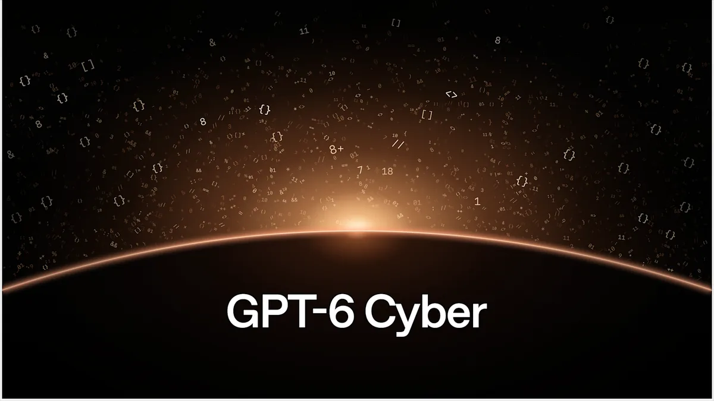

OpenAI's GPT-6 Cyber is Critical, and a pipeline found 948 Linux paths to root

Image: OpenAI
On Nov 5, OpenAI introduced GPT-6 Cyber, a cybersecurity model for authorized vulnerability research, available first to approved Daybreak Red customers in the API and Codex. OpenAI rates it Critical in cybersecurity under its Preparedness Framework (up from High for GPT-5.6 Cyber) and reports 48.5% on ExploitGym versus 32.1% for GPT-5.6 Cyber. The day before, in "A thousand fewer paths to root," OpenAI described a mid-October pipeline run that dynamically reproduced 1,724 Linux kernel vulnerabilities and produced 948 working local privilege-escalation exploits at an API cost of $1,213,430 (about $1,279 per LPE). The same campaign produced evidence for 81 previously unknown high-severity Firefox bugs, and Mozilla has been landing fixes. Access is gated; mainline models still cover everyday code review and triage.
For anyone building coding agents with broad permissions, this is the clearest proof yet that frontier models can industrially find and exploit bugs in foundational software. Sandboxes, patch cadence, and "stay in scope" training are no longer optional talking points.